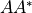
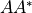
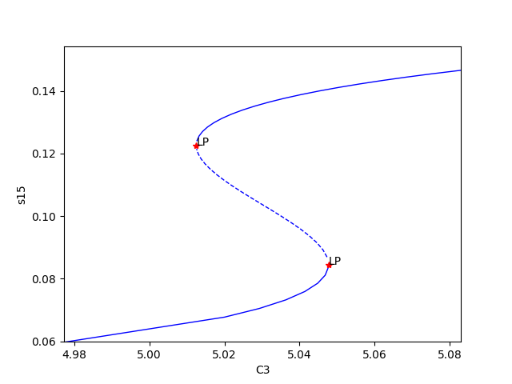

Mass Conservation Approach Walkthrough¶
Using the SBML file constructed as in CellDesigner Walkthrough, we will proceed by completing a more in-depth
explanation of running the mass conservation approach of [OMYS17]. Note that the mass conservation approach can
be ran on any network that has conservation laws, even if that network does have a sink/source. One can test whether or
not there are conservation laws by seeing if the output of crnt4sbml.Cgraph.get_dim_equilibrium_manifold() is
greater than zero. This tutorial will use Fig1Ci.xml.
The following code will import crnt4sbml and the SBML file. For a little more detail on this process consider Low Deficiency Approach.
import crnt4sbml
network = crnt4sbml.CRNT("/path/to/Fig1Ci.xml")
If we then want to conduct the mass conservation approach of [OMYS17], we must first initialize the mass_conservation_approach, which is done as follows:
opt = network.get_mass_conservation_approach()
This command creates all the necessary information to construct the optimization problem to be solved. Along with this, the initialization will also attempt to obtain a linear form of the Equilibrium Manifold. Note that this process may take several minutes for larger networks. For more detail on this process consider Creating the Equilibrium Manifold. The following is the output provided by the initialization:
Creating Equilibrium Manifold ...
Elapsed time for creating Equilibrium Manifold: 0.6395479999999996
Solving for species' concentrations ...
Elapsed time for finding species' concentrations: 1.3528160000000007
One very important value that must be provided to the optimization problem are the bounds for the decision vector of the optimization problem. For this reason, it is useful to see what decision vector was constructed. To do this one can add the following command to the script:
print(opt.get_decision_vector())
This provides the following output:
[re1, re1r, re2, re3, re3r, re4, re5, re5r, re6, s2, s6, s15]
To obtain more available functions that this initialization provides, see crnt4sbml.MassConservationApproach().
Using the decision vector provided, one can then construct the bounds which are necessary for the optimization problem
by creating a list of tuples where the first element corresponds to the lower bound value of the parameter and the second
element is the upper bound value of the parameter.
In addition to the bounds for the decision vector, we must also supply the bounds for those species’ concentrations that are not defined in the decision vector. To see the order and those species’ concentration bounds that you need to provide bounds for, we can use the following command:
print(opt.get_concentration_bounds_species())
This provides the following output:
[s1, s3, s7, s16]
This tells us that we need to provide a list of four tuples that correspond to the lower and upper bounds for the species s1, s3, s7, and s16, in that order.
As creating these bounds is not initially apparent to novice users or may become cumbersome, we have created a function call that will automatically generate physiological bounds based on the C-graph. To use this functionality one can add the following code:
bnds, conc_bnds = opt.get_optimization_bounds()
This provides the following values:
bnds = [(1e-08, 0.0001), (1e-05, 0.001), (0.001, 1.0), (1e-08, 0.0001), (1e-05, 0.001), (0.001, 1.0),
(1e-08, 0.0001), (1e-05, 0.001), (0.001, 1.0), (0.5, 500000.0), (0.5, 500000.0), (0.5, 500000.0)]
conc_bnds = [(0.5, 500000.0), (0.5, 500000.0), (0.5, 500000.0), (0.5, 500000.0)]
For more information and the correctness on these bounds please refer to Creating Physiological Bounds.
The next most important parameter for optimization is the number of initial points in the feasible point method (please see Numerical Optimization Routine for a detailed description of the optimization routine). It is usually good practice to run the optimization with 100 initial points and observe the minimum objective function value achieved. If an objective function value smaller than machine epsilon is not achieved, it is best to rerun the optimization with more initial points. If 10000 or more points are used and an objective function value smaller than machine epsilon is not achieved, then it is possible that the network does not produce bistability (although this test does not exclude the possibility for bistability to exist, as stated in the theory). We state the number of feasible points below.
num_itr = 100
The last values that can be defined before the optimization portion are the sys_min_val which states what value of the
objective function should be considered as zero (below we set this to machine epsilon), the seed for the random number
generation in the optimization method (below we set this to 0 so we can reproduce the results, None should be used if we
want the method to be random), the print_flag which tells the program if the objective function value and decision
vector for the feasible point and multi-start method should be printed out (here we set it to False, which means no
output will be provided), and numpy_dtype which tells the program the numpy data type that should be used in the
optimization method (here we set it to a float with 64 bits). Note that higher precision data types will increase the
runtime of the optimization, but may produce better results. See crnt4sbml.MassConservationApproach.run_optimization()
for the default values of the routine.
import numpy
sys_min = numpy.finfo(float).eps
sd = 0
prnt_flg = False
num_dtype = numpy.float64
Using these values, we run the optimization problem using the following command, which returns a list of the parameters (which correspond to the decision vectors) and corresponding objective function values that produce an objective function value smaller than machine epsilon.
params_for_global_min, obj_fun_val_for_params = opt.run_optimization(bounds=bnds, concentration_bounds=conc_bnds,
iterations=num_itr, seed=sd, print_flag=prnt_flg,
numpy_dtype=num_dtype, sys_min_val=sys_min)
The following is the output obtained by the constructed model:
Running feasible point method for 100 iterations ...
Elapsed time for feasible point method: 29.199651999999997
Running the multistart optimization ...
Smallest value achieved by objective function: 0.0
Elapsed time for multistart method: 136.14538600000003
At this point it may also be helpful to generate a report on the optimization routine that provides more information. To do this execute the following command:
opt.generate_report()
This will provide the following output:
The number of feasible points that satisfy the constraints: 99
Total feasible points that give F(x) = 0: 28
Total number of points that passed final_check: 28
The first line tells one how many initial points satisfy the constraints after the feasible point method is ran. Note that there should always be a nonzero amount provided here, if a nonzero amount is not given, new bounds should be considered. The second line describes how many feasible points provide an objective function value smaller than sys_min_val. The last line outputs the number of feasible points that produce an objective function value smaller than sys_min_val that also pass all of the constraints of the optimization problem. Note that it is not uncommon for the value provided in the last line to be smaller than the value provided in the second line. Given the optimization may take a long time to complete, it may be important to save the parameters produced by the optimization. This can be done as follows:
numpy.save('params.npy', params_for_global_min)
this saves the list of numpy arrays representing the parameters into the npy file params. The user can then load these values at a later time by using the following command:
params_for_global_min = numpy.load('params.npy')
Now that we have obtained some parameters that have achieved an objective function value smaller than sys_min_val, we can conduct numerical continuation to see if the parameters produce bistability for the ODE system provided by the network. The most important parameters that must be provided by the user are the principal continuation parameter (PCP) and the species you would like to compare it against. For more information on numerical continuation and these values see Numerical Continuation Routine. To select the PCP one needs to know which conservation law to choose. The following command will provide the conservation laws derived by the deficiency manager:
print(opt.get_conservation_laws())
This provides the following output:
C1 = 1.0*s16 + 1.0*s7
C2 = 1.0*s2 + 1.0*s3
C3 = 1.0*s1 + 2.0*s15 + 1.0*s16 + 1.0*s3 + 1.0*s6
here the left hand side of the equation corresponds to the constant that reflects the total amount of the leading species.
It is one of these constants that should be provided to the numerical continuation routine. For this example we choose
a PCP of C3 (total amount of species  ) and the species s15 (species ) for the y-axis of the
bifurcation diagram.
) and the species s15 (species ) for the y-axis of the
bifurcation diagram.
spcs = "s15"
PCP_x = "C3"
Now we can call the numerical continuation routine. First we set the species and pass in the parameters we obtained from
the optimization routine. The next input we provide is a dictionary representation of the AUTO 2000 parameters, to obtain
a description of these parameters and more options refer to AUTO parameters. Please note
that one should not set ‘SBML’ or ‘ScanDirection’ in these parameters as these are automatically assigned. It is
absolutely necessary to set PrincipalContinuationParameter in this dictionary.
Here we set the maximum stepsize for numerical continuation, DSMAX to 1e3. However, for certain runs of the numerical continuation this may produce jagged plots. Smaller values should be used if one wants to obtain a smoother plot, although it should be noted that this will increase the runtime of the numerical continuation. We also state the principal continuation parameter range by defining ‘RL0’ and ‘RL1’, the lower and upper bound for the parameter, respectively. In addition to this range, the lower and upper bounds for the measure of the error is also provided as ‘A0’ and ‘A1’, respectively.
Once we have set the AUTO parameters, we tell the numerical continuation routine whether or not to print out the labels obtained by the numerical continuation routine. Please refer to Numerical Continuation Routine for a description of this print out. The next value we provide is the string representation of the directory where we would like to store the multistability plots, if any are found (here we choose to create the stability_graphs directory in the current directory). The last value provided is an error_log_flag which tells the numerical continuation routine whether or not the log output provided by AUTO is suppressed.
Using this input we can now run the numerical continuation routine on the parameters that pass the constraints of the optimization problem and produce an objective function value smaller than sys_min_val. This is done below.
multistable_param_ind, plot_specifications = opt.run_continuity_analysis(species=spcs, parameters=params_for_global_min,
auto_parameters={'PrincipalContinuationParameter': PCP_x,
'RL0': 1e2, 'RL1': 1e6, 'A0': 0.0, 'A1': 5e6,
'DSMAX': 1e3},
print_lbls_flag=False, dir_path="./stability_graphs",
error_log_flag=True)
In addition to putting the multistability plots found into the path dir_path, this routine will also return the indices of params_for_global_min that correspond to these plots named “multistable_param_ind” above. Along with these indices, the routine will also return the plot specifications for each element in “multistable_param_ind” that specify the range used for the x-axis, y-axis, and the x-y values for each special point in the plot (named “plot_specifications” above). Also note that if multistability plots are produced, the plot names will have the following form: PCP_species id_index of params_for_global.png. The output provided by the numerical continuation run is as follows:
Running continuity analysis ...
Elapsed time for continuity analysis: 25.02327585220337
Again, we can generate a report that will contain the numerical optimization routine output and the now added information provided by the numerical continuation run.
opt.generate_report()
This provides the following output that describes that of the 28 parameter sets that passed the constraints of the optimization problem, 14 of them produce multistability for the given input. In addition to this, it also tells one the indices in params_for_global_min that produce multistability. In practice, larger ranges for the principal continuation parameter may be needed, but this will increase the runtime of the numerical continuation routine.
The number of feasible points that satisfy the constraints: 99
Total feasible points that give F(x) = 0: 28
Total number of points that passed final_check: 28
Number of multistability plots found: 14
Elements in params_for_global_min that produce multistability:
[4, 11, 12, 14, 15, 16, 19, 20, 21, 22, 23, 24, 26, 27]
The following is a bistability plot produced by element 26 of params_for_global_min. Here the solid blue line indicates stability, the dashed blue line is instability, and the red stars are the special points produced by the numerical continuation.
In addition to providing this more hands on approach to the numerical continuation routine, we also provide a greedy version of the numerical continuation routine. With this approach the user just needs to provide the species, parameters, and PCP. This routine does not guarantee that all multistability plots will be found, but it does provide a good place to start finding multistability plots. Once the greedy routine is ran, it is usually best to return to the more hands on approach described above. Note that as stated by the name, this approach is computationally greedy and will take a longer time than the more hands on approach. Below is the code used to run the greedy numerical continuation:
multistable_param_ind, plot_specifications = opt.run_greedy_continuity_analysis(species=spcs, parameters=params_for_global_min,
auto_parameters={'PrincipalContinuationParameter': PCP_x})
opt.generate_report()
This provides the following output:
Running continuity analysis ...
Elapsed time for continuity analysis: 143.82169270515442
The number of feasible points that satisfy the constraints: 99
Total feasible points that give F(x) = 0: 28
Total number of points that passed final_check: 28
Number of multistability plots found: 19
Elements in params_for_global_min that produce multistability:
[3, 4, 6, 7, 11, 12, 14, 15, 16, 17, 19, 20, 21, 22, 23, 24, 25, 26, 27]
Note that some of these plots will be jagged or have missing sections in the plot. To produce better plots the hands on approach should be used.
For more examples of running the mass conservation approach please see Further Examples.